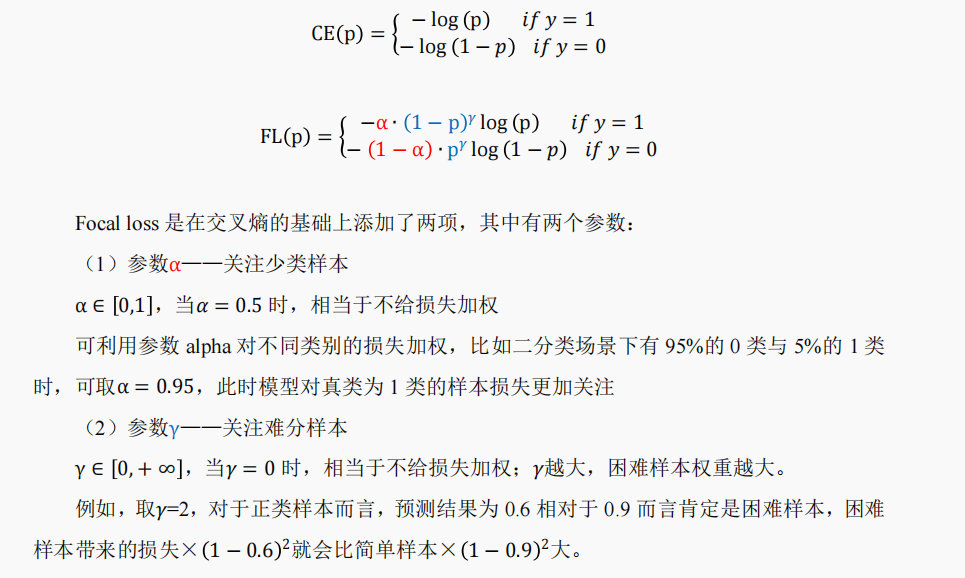

In this page you can find some notes about Machine Learning and Deep Learning(and things related to coding).
待补充
Spark; Transformer; leetcode刷题想法; DL model实战哪里有改善的地方还有模型参数数量；interesting 的模型框架（LHUC; MMOE）；损失函数设计；DL数学基础，梯度回传，梯度爆炸、梯度消失；ML（notDL）特征选择和特征重要性；indentifiable（HDP）；@函数模块函数？；git；
关于最大似然和最小损失的关系
[note] Max Likelihood and Min Loss function
关于机器学习里面的样本加权
关于样本类别分布不均的分类问题探索，对不同类样本加权是一种比较常见的方法，但怎么加权？为什么这样加权？（主要内容是大二学机器学习小组大作业里面的探索）
[note] how the parameter 'class_weight' work in tree models
sklearn中的class_weight参数可以在树模型or线性模型（如逻辑回归等）中使用： 在线性模型里加权的含义比较好理解，即修改损失函数，对不同类的样本带来的损失赋权重；
而对于这个参数如何在树模型中起作用，并没有找到官方的具体说明， 所以我在这个note里面用一些简单的simulation来探索验证对于其加权方式的猜想， 最后结合sklearn这部分的源代码，进一步确定了其加权原理。

关于分布式数据处理(主要是Spark)
[note] Analytics on the Cloud (Scala, Spark Basics, Streaming, Graphs)
数据预处理的一个要注意的点
在对数据纳入模型前做预处理（如标准化、PCA等）时，需要注意的是， 我们要对测试集做和训练集相同的操作。
即比如我们对于训练集做了标准化（减均值除标准差），那么对于测试集来说， 我们要做的是，减<训练集的>均值除<训练集的>标准差。 PCA也一样，我们要在测试集上操作和在训练集上相同的坐标系转换。
这里我们其实隐形做了一些假设，即我们假定未经处理的训练集和测试集是来自同一分布， 而我们得到的模型是在“预处理后的训练集”这个分布上可行的模型， 所以我们要先把测试集也变化到同一分布，即对测试集施加同样的预处理步骤。
之前试了一下 关于PCA的simulation， 当然理解原理了就知道正确的方法的效果当然会较好。
PCA降维对于非深度机器学习模型的影响
对于非深度的机器学习模型来说，高维输入特征时， PCA降维对于训练速度有显著提升，因为输入特征可以看做是减少了； 有时对效果也有改善，因为原始数据有冗余信息。
后面会放一个关于PCA的note，最近看论文发现方差矩阵的operator norm 可以一定程度上反应X的相关性，结论还蛮有意思的，和PCA也有一定关联。
Dropout层和BatchNormalization层
在深度学习里面，有些情况下， Dropout层和BatchNormalization层对于防止过拟合、提升训练效果有奇效。
About copy and deepcopy
The difference between shallow and deep copying is only relevant for compound objects objects that contain other objects, like lists or class instances.
A shallow copy constructs a new compound object and then, to the extent possible, inserts references into it to the objects found in the original.
A deep copy constructs a new compound object and then, recursively, inserts copies into it of the objects found in the original.
关于softmax不是identifiable的note